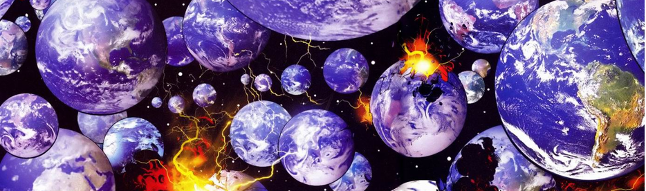

INICIO
IMAGENS
CONTATO
MAIS
LOCALIZAÇÃO
imagens
contato
localização

Onde estamos localizados.
Veja no mapa:
Use dois dedos para mover o mapa
Dados do mapa
Dados cartográficos ©2016 Google, INEGI
Dados do mapa
Dados cartográficos ©2016 Google, INEGI
Dados cartográficos ©2016 Google, INEGI
Termos de Uso
Informar erro no mapa
Mapa
Relevo
Satélite
Marcadores